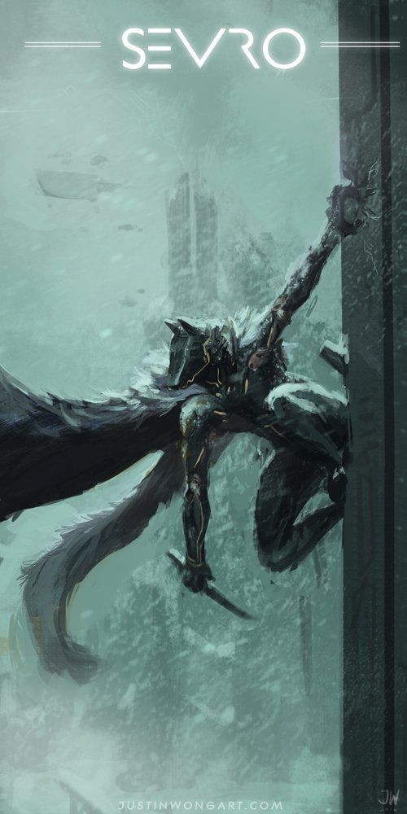
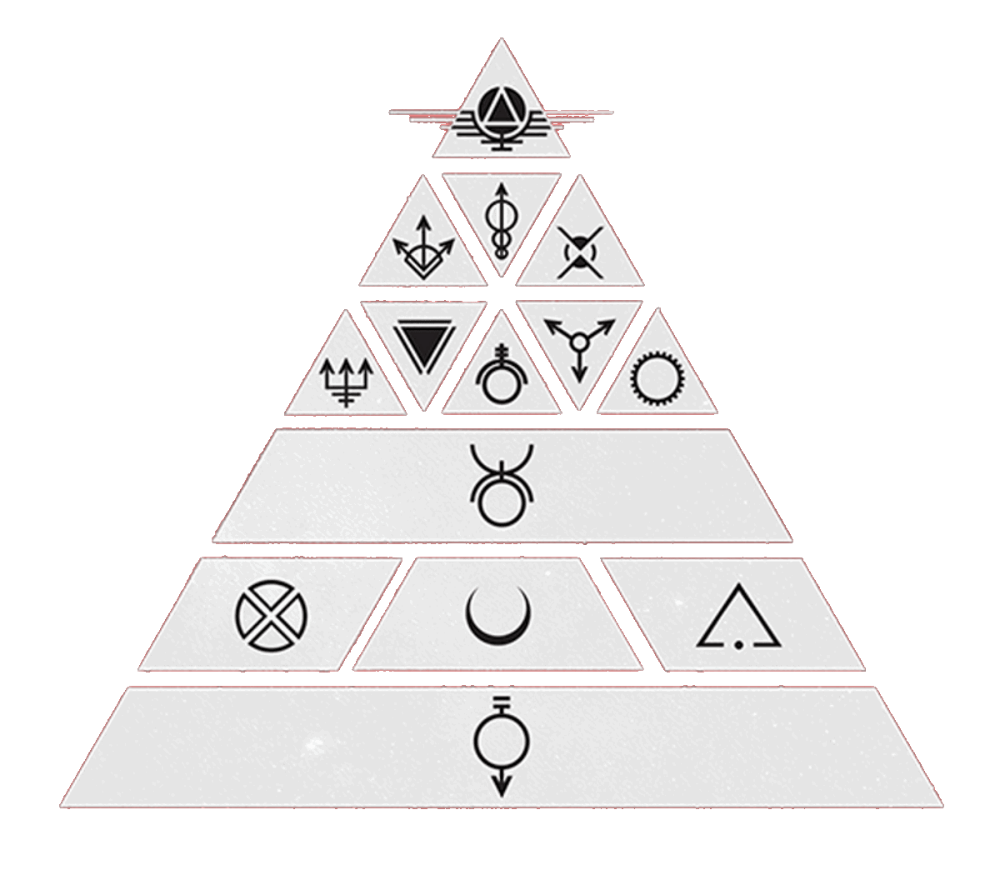

A little passage of the first book:
The first thing you should know about me is I am my father’s son. And when they came for him, I did as he asked. I did not cry. Not when the Society televised the arrest. Not when the Golds tried him. Not when the Grays hanged him. Mother hit me for that. My brother Kieran was supposed to be the stoic one. He was the elder, I the younger. I was supposed to cry. Instead, Kieran bawled like a girl when Little Eo tucked a haemanthus into Father’s left workboot and ran back to her own father’s side. My sister Leanna murmured a lament beside me. I just watched and thought it a shame that he died dancing but without his dancing shoes.
Characters
| Darrow | Sevro au Barca |
|---|---|

|
 |
Color
The Color system of the Society originally was a caste system created by early humans on Earth to create order when first colonizing the Moon. It is also a form of social hierarchy improved upon by the early Golds during their conquering of the Solar System. It divides Humanity into fourteen distinct "Colors."
On the foundation of the colors
When the first colonists ventured forth from Earth to make their home on the moon, they created a hierarchy for labor. In time, they improved this hierarchy through genettic and surgival manipulation of their fellow man. The result was a color-coded Society of percent efficiency, one dominated by a superior breed of humanity, the Golds.